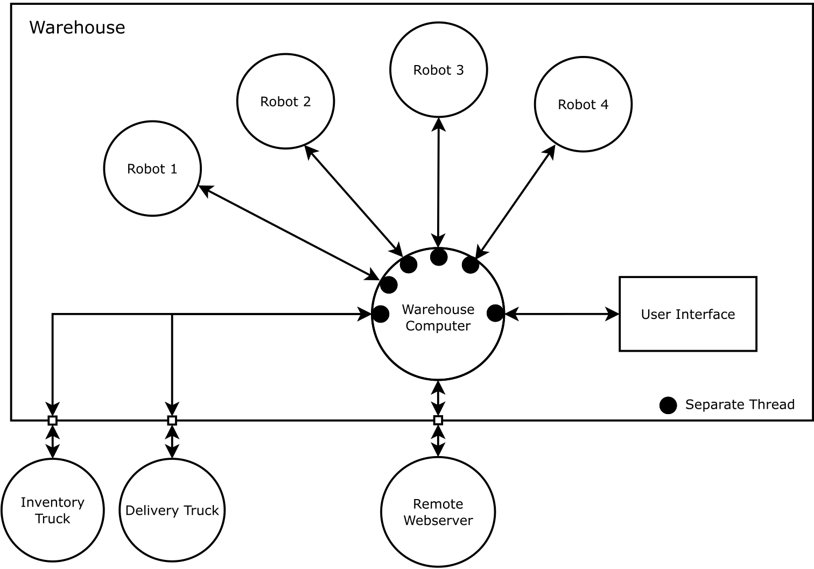

The automated warehouse system features robots that moves around the warehouse to stock and deliver products between shelves and delivery trucks.
The program first initializes the data necessary to run the program. Because the warehouse is largely empty (or has any empty space), the program will automatically take stock of any empty space in the shelves as well as their positions and partition the robot instructions necessary to stock-up on inventory. Simultaneously, orders are completed one at a time and each order would be partitioned into smaller instructions for the robots to complete. When the truck is full, the warehouse experiences a delay which signifies one truck leaving and another truck coming in.